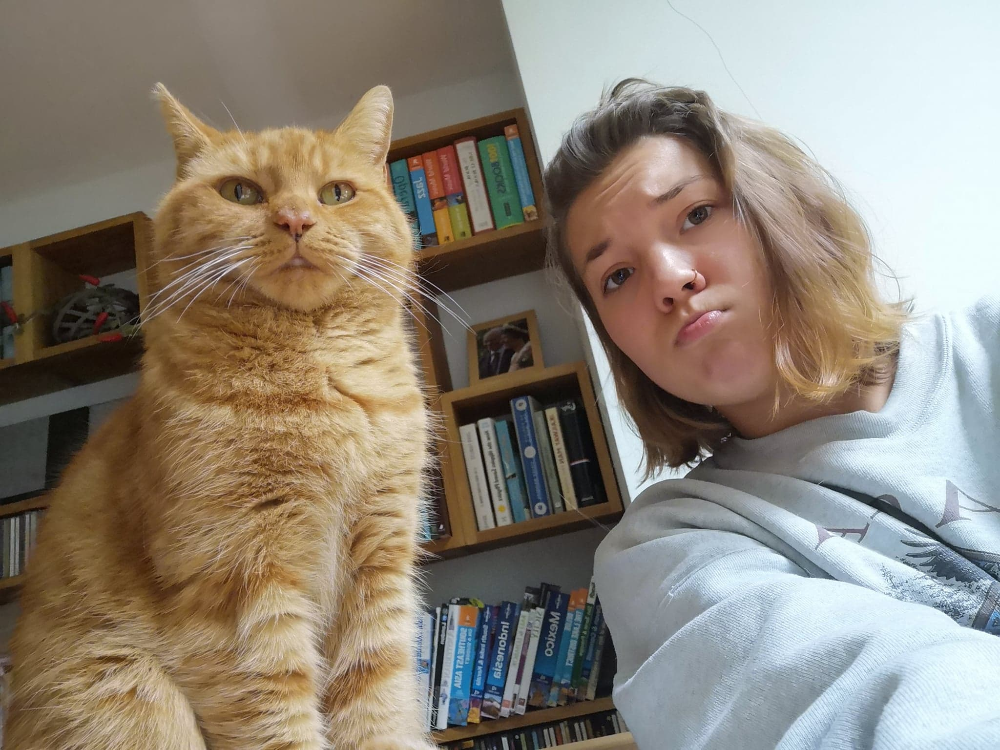
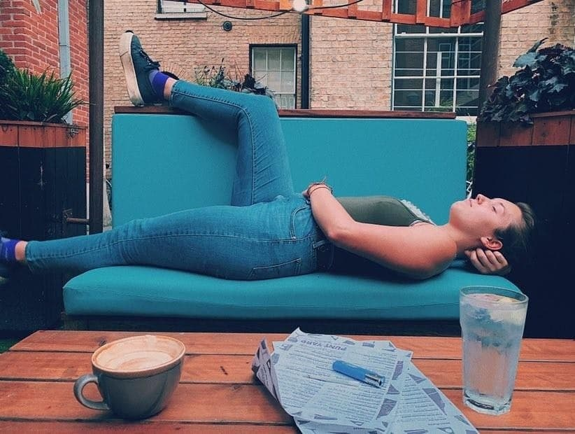
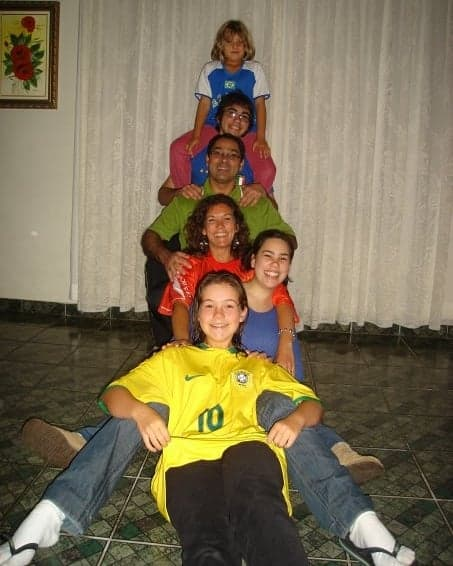
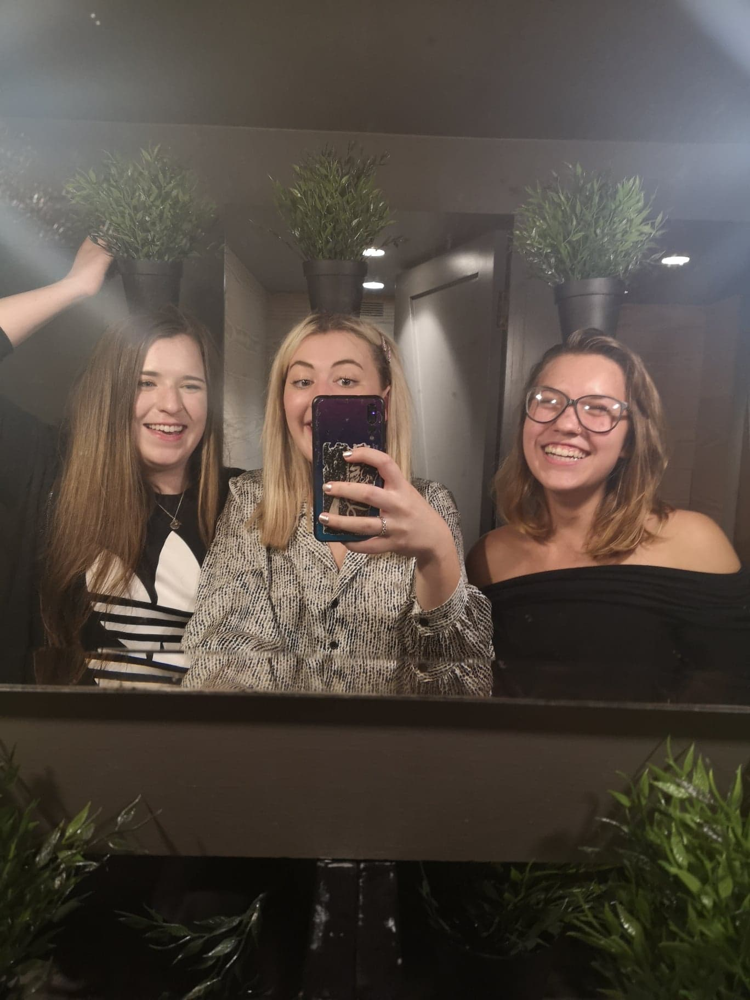
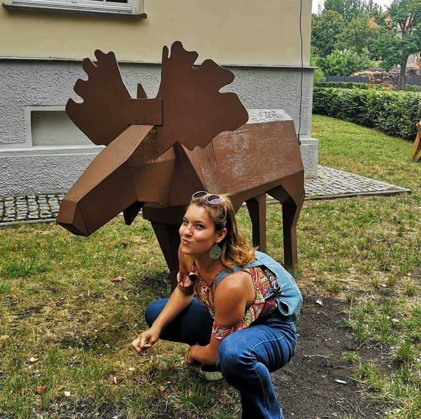

<!DOCTYPE html>
<html lang="en">
<head>
    <meta charset="UTF-8">
    <meta name="viewport" content="width=device-width, initial-scale=1.0">
    <meta http-equiv="X-UA-Compatible" content="ie=edge">
    <title>Adri's Life Story</title>
    <link href="https://fonts.googleapis.com/css?family=Big+Shoulders+Display&display=swap" rel="stylesheet">
    <link rel = "stylesheet" href = "css/style.css">
    <link rel="stylesheet" href="https://use.fontawesome.com/releases/v5.5.0/css/all.css" integrity="sha384-B4dIYHKNBt8Bc12p+WXckhzcICo0wtJAoU8YZTY5qE0Id1GSseTk6S+L3BlXeVIU" crossorigin="anonymous">
    <link href="https://fonts.googleapis.com/css?family=Audiowide&display=swap" rel="stylesheet">
    <!-- <body>
<div class="topnav" id="myTopnav">
  <a href="#home" class="active">Home</a>
  <a href="#news">News</a>
  <a href="#contact">Contact</a>
  <a href="#about">About</a>
  <a href="javascript:void(0);" class="icon" onclick="myFunction()">
    <i class="fa fa-bars"></i>
  </a>
</div>
      
          <div class="fullCard">
            <div class="cardContent">
              <div class="cardText">
                <h4>Hint</h4>
                <p>
                Basically a cheatsheet on how to get me to like you and know my life :).<br>Have fun figuring me out!</p>             
             </div>
              </div>
            </div>
          </div>
    
    <div><h4>Key Information</h4>
<hr>
<ul id="fact_list">
        <li>Yes, I have an accent yet I am NOT American. Brazilian actually.</li>
        <li>I dare you to try and annoy me. Find out what happens.</li>
        <li>If you asked me if I am a cat or a dog person, I'll say an Animal person because screw choosing one.</li>
    </ul>
    </div>
    <div id="likes_dislikes">
    <h4>My Likes and Dislikes</h4>
    <hr>
    <h3>Three things I like:</h3>
    <ul>
        <li>Food</li>
        <li>Books</li>
        <li>People who are nice</li>
    </ul>
</div>
    <h3>Three Things I don't like:</h3>
    <ul>
        <li>Annoying People</li>
        <li>People who are rude to Waiters</li>
        <li>Anoop's Card skills</li>
    </ul> 
</div>
<div>
<h4>My Hobbies</h4>
<hr>
<ul>
        <li>Running</li>
        <li>Reading</li>
        <li>Dancing</li>
    </ul>
</div>
<div>
<h4>Favourite Places in the world</h4>
<hr>
<ol>
        <li>My Bed</li>
        <li>Warsaw</li>
        <li>Amsterdam</li>
    </ol>
</div>
<div>
    <h4>Why I joined Code Nation</h4>
    <hr>
    <p>I  joined Code Nation because I wanted to pursue a career in the thing I recently grew to love.  knew coming into this that I wasn't grwa at the code itself but I wanted to learn and become better.
        I have been working a dead end job  for so long and I did not want to go to University as the thought of spending another three years training in a degree, that I'd probably never use did not appeal to me.
        I was never great at the art of essays and working on things that did not interest me. It was extremely obvious when I had an interest for something and when I didn't care.
        Code is something that relit a spark in me and made me feel curious once again. 
        So I decided to learn and delve further into the world and industry of technology and well here I am!
    </p>
</div>
<div>
    <h4>First Impressions</h4>
    <hr>
<p>I struggled at first but once I began to more of what I was doing, it became easier and easier!</p>
</div>
<button>Like Me.</button>
    </body>
    <footer>

    </footer> -->
</html>

<div class="wrapper">
        <!-- Navigation -->
        <div class="topnav" id="myTopnav">
                <a href="index.html" class="active">Home</a>
                <a href="Updates.html">Updates</a>
                <a href="Contact.html">Contact</a>
                <a href="About.html">About</a>
                <a href="javascript:void(0);" class="icon" onclick="myFunction()">
                  <i class="fa fa-bars"></i>
                </a>
              </div>
        <!-- Top Container -->
        <section class="top-container">
          <header class="showcase">
            <h1>The Story behind the legend</h1>
            <p>Like all good things, you have to work for it. Same goes for Adri. Work hard, play hard!</p>
            <a href="About.html" class="btn">Read More</a>
          </header>
          <div class="top-box top-box-a">
            <button>
            <a href="https://www.linkedin.com/in/adriana-roos-b92658184/" id="btn"><i class="fab fa-linkedin fa-7x"></i></a>
          </button>
          </div>
        
        
          <div class="top-box top-box-b">
              <button>
            <a href="https://github.com/adrimerican" id="btn"><i class="fab fa-github fa-7x"></i></a>
              </button>
          </div>
        
        </section>
    
        <!-- Boxes Section -->
        <section class="boxes">
          <div class="box">
            <i class="fas fa-question-circle fa-4x" link = ""></i>
            <h3>Did you know...</h3>
            <p>She can speak four languages as well as being able to understand 3 more!</p>
          </div>
          <div class="box">
            <i class="fas fa-globe fa-4x" link = ""></i>
            <h3>Travel History</h3>
            <p>Travelling is a passion of her's and would jumo on any opportunity to learn a new culture and it's people customs.</p>
          </div>
          <div class="box">
            <i class="fas fa-cog fa-4x" link = ""></i>
            <h3>Personal Development</h3>
            <p>Yes, she's a work in progress. And yes, she messes up but she tries her hardest. </p>
          </div>
          <div class="box">
            <i class="fas fa-user-injured fa-4x"></i>
            <h3>Support</h3>
            <p>She will always need hugs and hot cocoa on bad days. If it's a good day, just humour her.</p>
          </div>
        </section>
    
        <!-- Info Section -->
        <section class="info">
        
          <div>
            <h2>Understanding Adri in detail</h2>
            <p>The complexity of Adri is a thing of wonder. She is not a simply understood person. Like an onion, she has layers, like an onion. Mysterious. ELusive and complex. TO understand her you must dive deeper into her psyche. To her core.</p>
            <a href="About.html" class="btn">Learn More</a>
          </div>
        </section>
    
        <!-- Portfolio -->
        <section class="portfolio">
          
          
          
          
          
          
          
          
          
        </section>
    
        <!-- Footer -->
        <footer>
          <p>Adri Corp &copy; 2019</p>
        </footer>
    
      </div>
      <!-- Wrapper Ends -->
